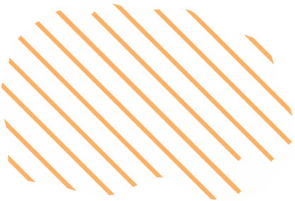
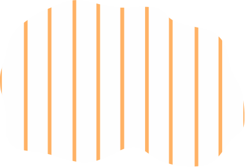
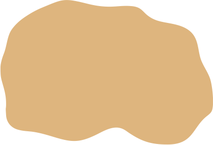

| території православних єпархій, підпорядкованих Московському патріархатові |
|  | території "заштаних" монастирів правобережного Подніпров'я, що підпорядковувалися Київській православній митрополії |
|  | малозаселені території Запорожжя |
|  | території інших православних Церков |
| межі Московського патріархату |
 | межі Молдавської митрополії |
| центри православних єпархій |
| православні та/або греко-католицькі церкви |
| церкви, збудовані коштом Івана Мазепи |
 | православні монастирі |
| території греко-католицьких єпархій, підпорядковані Київській греко-католицькій митрополії |
| території греко-католицьких єпархій, які не підпорядковувалися Київській греко-католицькій митрополії |
| території спільні як для греко-католиків, так і для представників інших конфесій |
| межі Київської греко-католицької митрополії |
| межі Мукачівської греко-католицької єпархії |
| центри греко-католицьких єпархій |
| православні та/або греко-католицькі церкви |
 | греко-католицькі монастирі |